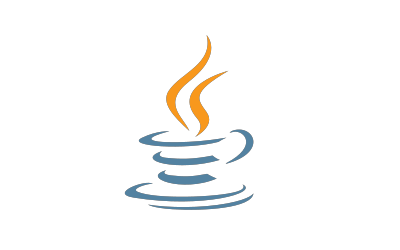

Laman web tutorial Java dan aplikasi dalam Bahasa Melayu

Tutorial ini adalah untuk sesiapa yang ingin belajar programming
language Java. Tutorial bermula dengan topik yang paling asas.
Tutorial ini sesuai untuk pelajar-pelajar dan programmer yang ingin
melihat syntax Java.
Tujuan tutorial ini lebih fokus kepada struktur code dalam aplikasi.
Kita akan melihat topik-topik berkenaan dalam bab Database dan Code
Quality.
Tutorial Java adalah percuma dan boleh dibaca secara online. Jadi,
anda boleh baca pada bila-bila masa. Tunggu apa lagi, Jom Belajar
Java!
Tutorial Git ini terbuka kepada semua programmer tidak kira
programming language mana yang digunakan. Tutorial ini sesuai untuk
programmer yang ingin menjejaki setiap perubahan yang mereka lakukan
semasa development.
Semasa mengikuti tutorial ini, kita akan melihat asas penggunaan Git
untuk programmer dan sekumpulan programmer. Kita juga akan melihat
gambaran kehidupan seharian programmer di tempat kerja.
Tutorial Git adalah percuma dan boleh dibaca secara online. Jadi, anda
boleh baca pada bila-bila masa. Tanpa membuang masa, Jom Belajar Git!
Pembangunan website ini akan sentiasa berterusan. Jadi, anda mungkin
akan melihat perubahan berlaku dari semasa ke semasa. Anda boleh
melihat pembangunan website Jom Belajar Java di GitHub.
Jika ada apa-apa kesilapan, penambahbaikan, atau ketidakfahaman yang
ingin anda ketengahkan, anda boleh kemukakan di Google
Group.